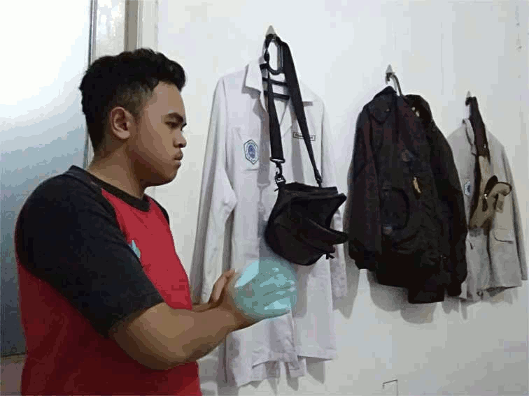

Biografi saya

Perkenalkan nama lengkap saya Ivan Dwiharyo yang biasa dipanggil Ivan atau ada beberapa orang yang memanggil saya dengan sebutan NagaAer(?). Saya lahir di Bogor pada tanggal 8 Februari 2018 dan merupakan anak ketiga dari tiga bersaudara yang juga berarti saya anak bungsu. Ayah saya bernama Almarhum Ir. Brahma Wibowo Saleh dan ibu saya bernama Raden Lasmayawati, setelah ayah kandung saya meninggal dunia ibu saya menikah dengan ayah saya saat ini yang bernama Madison Heri. Saya memiliki 2 kakak laki laki, yang paling tua bernama Axel Aryobowo yang sekarang merupakan mahasiswa tingkat akhir di universitas Gunadarma. Kakak saya yang kedua tinggal di Bandung bersama ibunya.
Sekarang saya bersekolah di SMK-SMAK Bogor atau biasa dikenal dengan SMAKBO, sekolah yang menurut saya merupakan sekolah yang terbaik yang pernah ada di muka bumi ini. Mula-mulanya saya tidak tahu apa apa tentang sekolah ini tapi ada teman saya yang mengajak saya untuk daftar di SMAKBO. Saya pikir kenapa juga saya harus menolak, dan memang jodoh sepertinya. Saya ternyata terpilih untuk menjadi siswa SMAKBO, perasaan saya pun senang sekali namun orang tua saya kurang setuju dengan keputusan ini karena menganggap kalau SMAKBO bukanlah sekolah negri melainkan SMK biasa. Karena satu dan lain hal akhirnya orang tua saya pun mengerti dan membiarkan saya bersekolah disini. Di SMAKBO saya mendapatkan banyak teman teman baru dan pengalaman yang tidak tergantikan.
Di Smakbo saya mendapat banyak ilmu dari yang saya dapatkan dari smakbo dari mulai yang eksak sampai non eksak. Baru baru ini di lab komputer Smakbo saya belajar cara membuat boomerang seperti instagram dengan cara manual menggunakan aplikasi editor GIMP. Seperti inilah hasil akhirnya

Entah mendapat ilham darimana tapi begitu guru saya meminta membuat boomerang saya langsung terpikirkan salah satu jurus andalan pada animasi "Dragon Ball" yaitu"Kamehameha". Oh iya saya juga suka dengan kultur Jepang dan kerap menghadiri acara acara budaya jepang yang ada di Jabodetabek, tapi sekarang sudah tidak terlalu sih.